data(mtcars)
data(iris)
# Convert cyl to factor for grouped plots
mtcars$cyl <- as.factor(mtcars$cyl)Statistical Graphics
Visualising Data Effectively in R
Introduction
Statistical graphics are visual representations of data that help us explore distributions, relationships, patterns, and anomalies that are impossible to see in tables of numbers.
“A picture is worth a thousand words — in statistics, a good chart is worth a thousand rows of data.”
Good graphics are the first and last step in data analysis: used in exploratory data analysis (EDA) to understand data, and in reporting to communicate findings.
Principles of Good Statistical Graphics
- Show the data: Do not hide information with over-aggregation.
- Maximise data-ink ratio: Remove non-essential decorations (chart junk).
- Label clearly: Every axis, title, and legend must be informative.
- Choose the right chart: The chart type must match the data type and the question.
- Avoid misleading scales: Always start y-axis at 0 for bar charts.
Choosing the Right Chart
| Data Type | Comparison Goal | Best Chart |
|---|---|---|
| One continuous variable | Distribution | Histogram, Density, Boxplot |
| One categorical variable | Frequency | Bar chart, Pie chart |
| Two continuous variables | Relationship | Scatter plot |
| Continuous over time | Trend | Line chart |
| Continuous by category | Comparison | Side-by-side boxplot |
| Multivariate | Overview | Pairs plot, Heatmap |
| Part-to-whole | Proportion | Stacked bar, Pie |
Base R Graphics
Setup
Histogram — Distribution of One Variable
hist(mtcars$mpg,
breaks = 12,
col = "steelblue",
border = "white",
main = "Distribution of Fuel Efficiency",
xlab = "Miles Per Gallon (MPG)",
ylab = "Frequency")
# Add density curve
lines(density(mtcars$mpg) |> (\(d) list(x = d$x, y = d$y * length(mtcars$mpg) * diff(range(mtcars$mpg)) / 12))(),
col = "red", lwd = 2)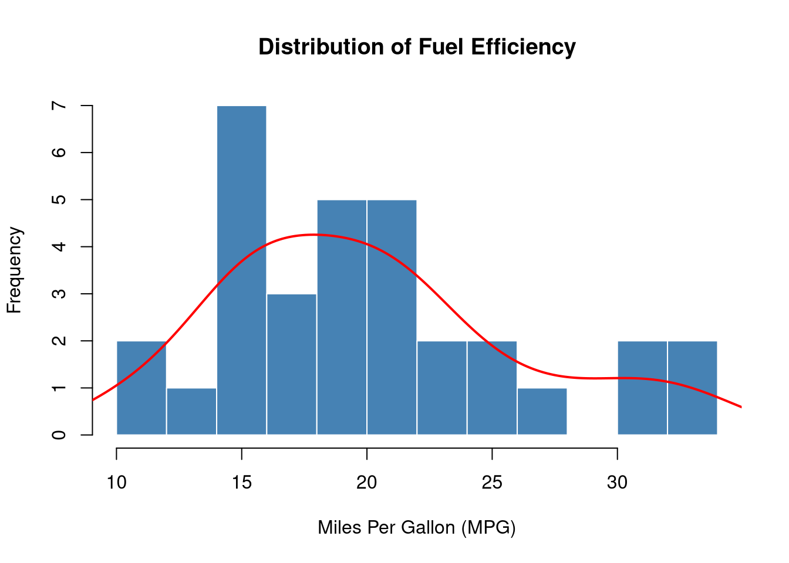
When to use: To see the shape, spread, and central tendency of a single continuous variable.
Boxplot — Comparing Distributions
boxplot(mpg ~ cyl,
data = mtcars,
col = c("lightblue", "lightgreen", "salmon"),
border = "navy",
main = "MPG by Number of Cylinders",
xlab = "Cylinders",
ylab = "Miles Per Gallon")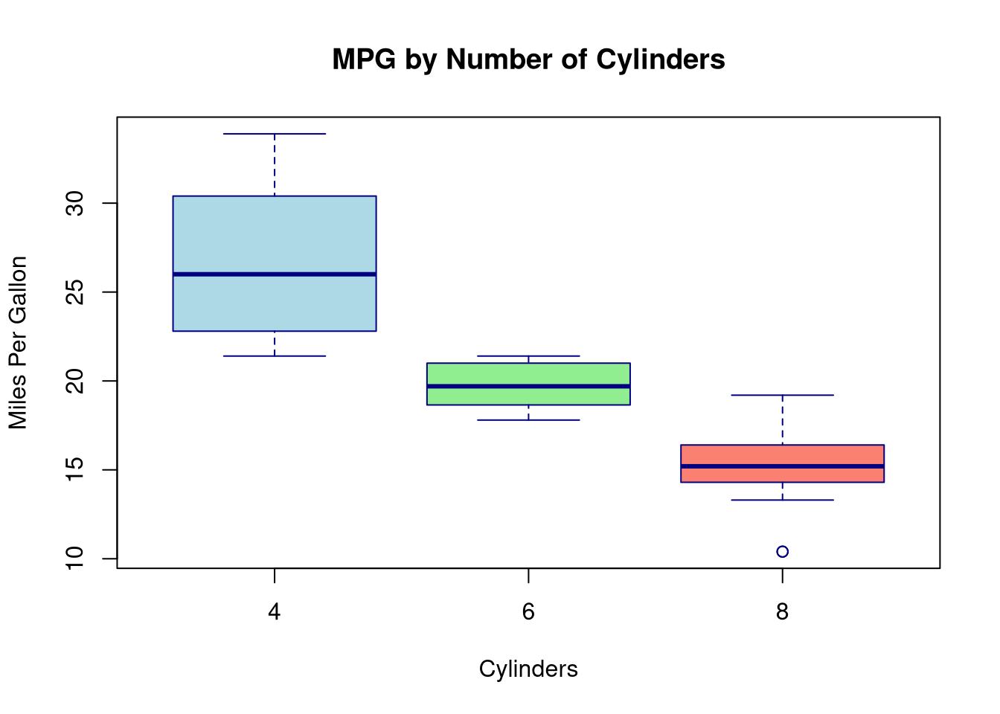
Reading a boxplot:
- Box: Q1 to Q3 (middle 50% of data)
- Line inside box: Median (Q2)
- Whiskers: Extend to 1.5 × IQR from the box edges
- Points beyond whiskers: Outliers
When to use: Compare distributions across groups; excellent for detecting outliers.
Scatter Plot — Relationship Between Two Variables
plot(mtcars$wt, mtcars$mpg,
pch = 16,
col = as.numeric(mtcars$cyl) + 1,
cex = 1.3,
xlab = "Weight (1000 lbs)",
ylab = "Miles Per Gallon",
main = "Weight vs MPG by Cylinders")
legend("topright",
legend = c("4 cyl", "6 cyl", "8 cyl"),
col = c(2, 3, 4),
pch = 16,
title = "Cylinders")
# Add overall trend line
abline(lm(mpg ~ wt, data = mtcars), col = "darkgrey", lwd = 2, lty = 2)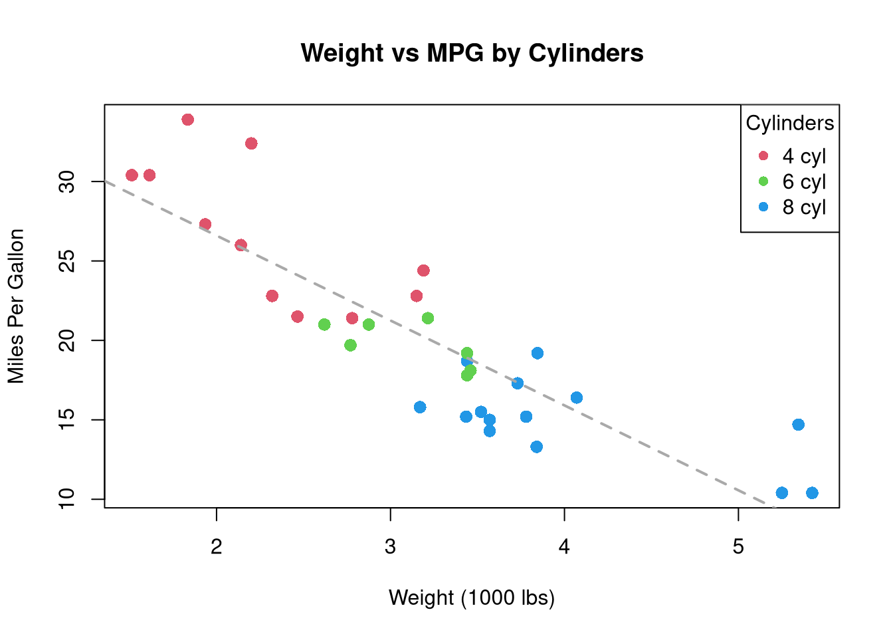
When to use: Examine the relationship (direction, strength, linearity) between two continuous variables.
Bar Chart — Frequency of Categories
cyl_counts <- table(mtcars$cyl)
barplot(cyl_counts,
col = c("lightblue", "steelblue", "navy"),
border = "white",
main = "Number of Cars by Cylinder Count",
xlab = "Cylinders",
ylab = "Count",
ylim = c(0, 16))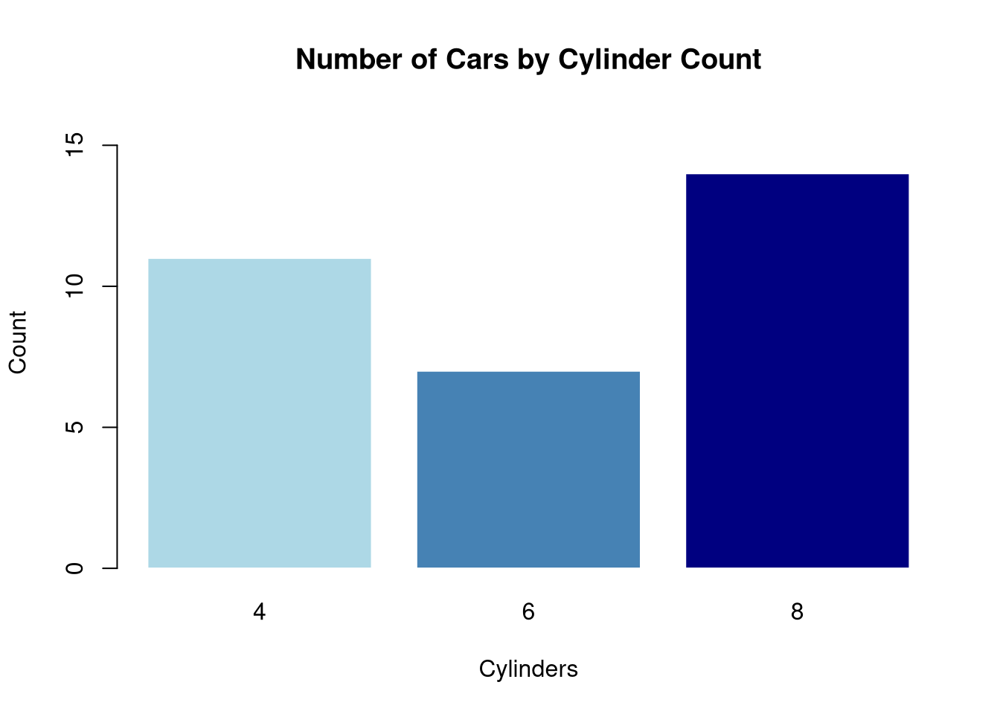
When to use: Show counts or frequencies for categorical data.
Line Chart — Trends Over Time
plot(AirPassengers,
col = "steelblue",
lwd = 2,
main = "Monthly Airline Passengers (1949–1960)",
xlab = "Year",
ylab = "Passengers (thousands)")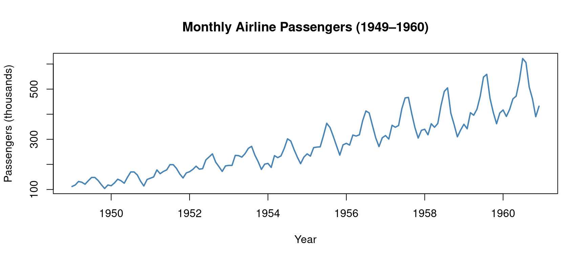
When to use: Display how a quantity changes over time.
Pairs Plot — Multivariate Overview
pairs(iris[, 1:4],
col = as.numeric(iris$Species) + 1,
pch = 16,
main = "Pairs Plot — Iris Dataset",
labels = c("Sepal\nLength", "Sepal\nWidth", "Petal\nLength", "Petal\nWidth"))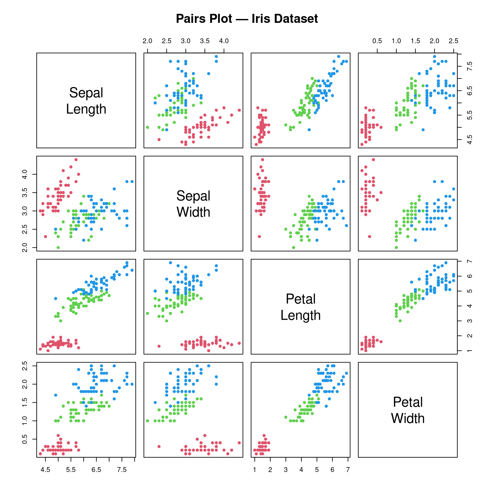
When to use: Explore all pairwise relationships in a dataset simultaneously. Excellent for EDA.
ggplot2 — Grammar of Graphics
ggplot2 is based on the Grammar of Graphics: every plot is built from:
- Data: the dataset
- Aesthetics (
aes): what variables map to x, y, colour, size, shape - Geometries (
geom_*): the visual elements (points, lines, bars, boxes) - Scales: control axes and legends
- Facets: split into subplots
- Theme: control the non-data appearance
ggplot(data, aes(x = ..., y = ..., colour = ...)) +
geom_*() +
labs(...) +
theme_*()Setup
# install.packages("ggplot2")
library(ggplot2)
# Convert for ggplot
mtcars2 <- mtcars
mtcars2$cyl <- as.factor(mtcars2$cyl)ggplot2 Histogram
ggplot(mtcars2, aes(x = mpg)) +
geom_histogram(bins = 12, fill = "steelblue", colour = "white") +
geom_density(aes(y = after_stat(count) * 2.5),
colour = "red", linewidth = 1) +
labs(title = "Distribution of MPG",
x = "Miles Per Gallon",
y = "Count") +
theme_minimal()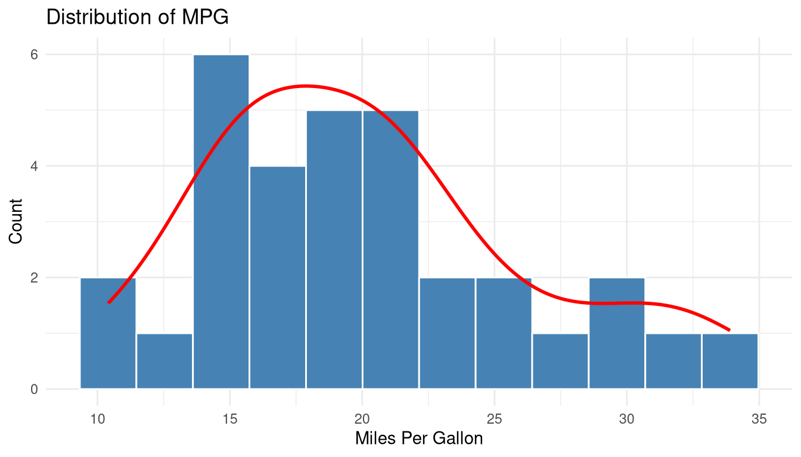
ggplot2 Boxplot
ggplot(mtcars2, aes(x = cyl, y = mpg, fill = cyl)) +
geom_boxplot(outlier.colour = "red", outlier.shape = 16) +
scale_fill_manual(values = c("lightblue", "lightgreen", "salmon")) +
labs(title = "MPG Distribution by Cylinders",
x = "Number of Cylinders",
y = "Miles Per Gallon",
fill = "Cylinders") +
theme_minimal() +
theme(legend.position = "none")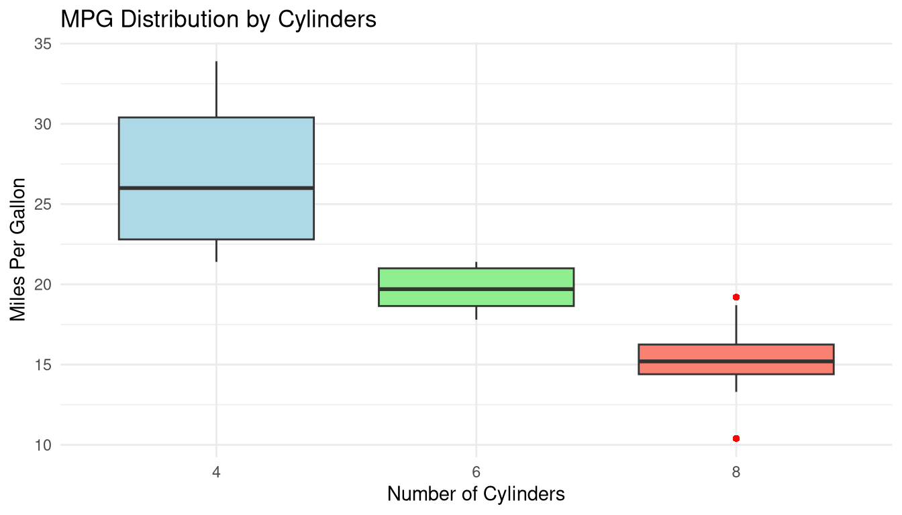
ggplot2 Scatter Plot with Smooth Trend
ggplot(mtcars2, aes(x = wt, y = mpg, colour = cyl)) +
geom_point(size = 3, alpha = 0.8) +
geom_smooth(method = "lm", se = TRUE, colour = "black",
linetype = "dashed", linewidth = 0.8) +
scale_colour_manual(values = c("4" = "#2196F3",
"6" = "#4CAF50",
"8" = "#F44336")) +
labs(title = "Weight vs MPG",
subtitle = "Linear trend with 95% confidence band",
x = "Weight (1000 lbs)",
y = "Miles Per Gallon",
colour = "Cylinders") +
theme_minimal()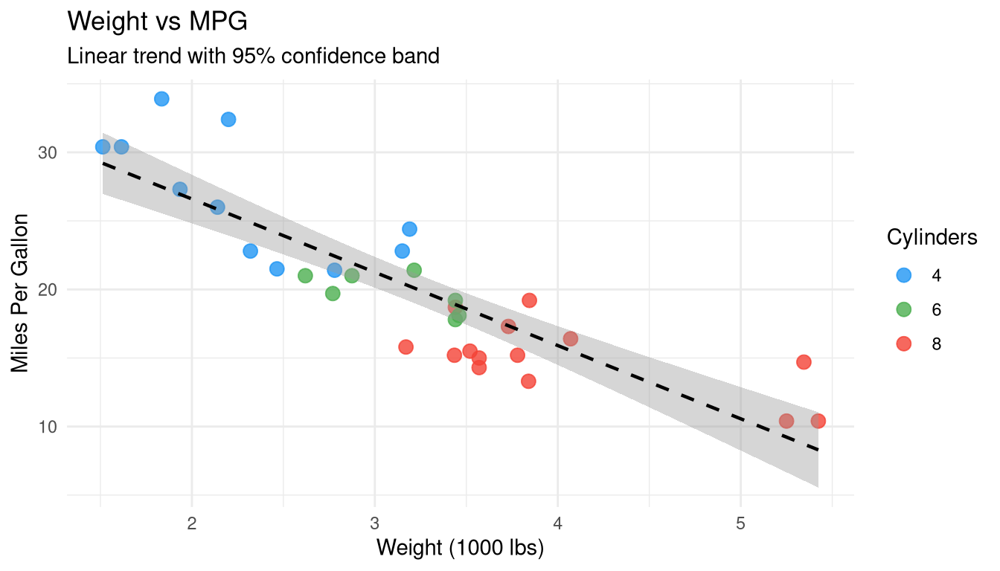
ggplot2 Faceted Plot
ggplot(mtcars2, aes(x = wt, y = mpg)) +
geom_point(colour = "steelblue", size = 2.5, alpha = 0.8) +
geom_smooth(method = "lm", se = FALSE, colour = "red") +
facet_wrap(~ cyl, labeller = label_both) +
labs(title = "MPG vs Weight — Faceted by Cylinders",
x = "Weight (1000 lbs)",
y = "Miles Per Gallon") +
theme_bw()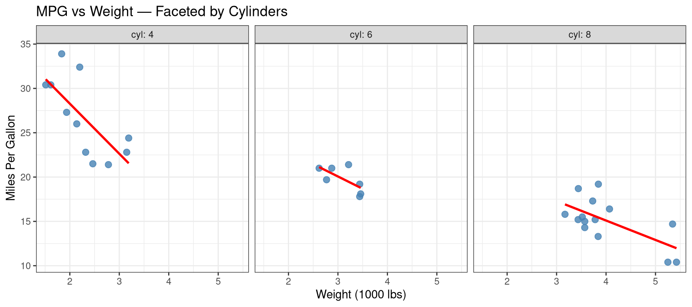
When to use facets: Compare the same relationship across subgroups without overlapping data.
ggplot2 Bar Chart
ggplot(mtcars2, aes(x = cyl, fill = cyl)) +
geom_bar() +
scale_fill_manual(values = c("lightblue", "steelblue", "navy")) +
labs(title = "Car Count by Cylinders",
x = "Cylinders", y = "Count") +
theme_minimal() +
theme(legend.position = "none")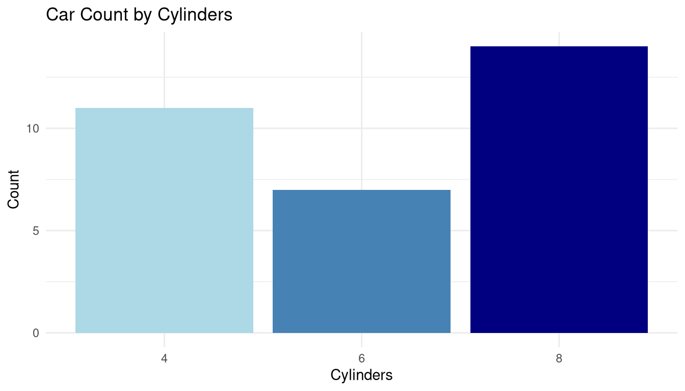
Heatmap — Correlation Matrix
# Compute correlation matrix
mtcars_num <- mtcars[, sapply(mtcars, is.numeric)]
cor_mat <- cor(mtcars_num)
# Reshape for ggplot
cor_df <- as.data.frame(as.table(cor_mat))
names(cor_df) <- c("Var1", "Var2", "Correlation")
ggplot(cor_df, aes(x = Var1, y = Var2, fill = Correlation)) +
geom_tile(colour = "white", linewidth = 0.5) +
geom_text(aes(label = round(Correlation, 2)),
size = 3, colour = "black") +
scale_fill_gradient2(low = "#D73027", mid = "white", high = "#1A9850",
midpoint = 0, limits = c(-1, 1)) +
labs(title = "Correlation Heatmap — mtcars",
x = "", y = "") +
theme_minimal() +
theme(axis.text.x = element_text(angle = 45, hjust = 1))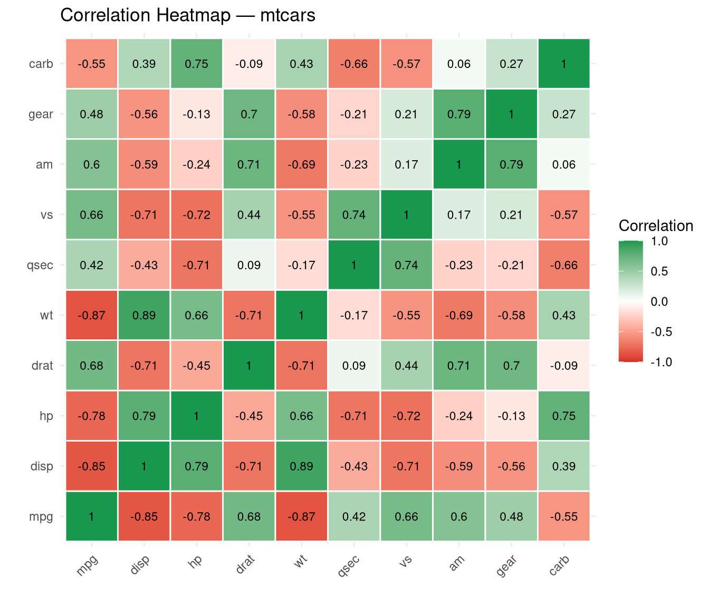
When to use: Quickly identify strongly correlated variable pairs before regression modelling.
Saving Plots
# Base R
png("my_plot.png", width = 800, height = 600)
hist(mtcars$mpg)
dev.off()
# ggplot2
p <- ggplot(mtcars2, aes(x = mpg)) + geom_histogram(fill = "steelblue")
ggsave("my_ggplot.png", plot = p, width = 8, height = 5, dpi = 300)Summary
| Chart Type | Best For | Base R | ggplot2 |
|---|---|---|---|
| Histogram | Distribution | hist() |
geom_histogram() |
| Boxplot | Comparing groups | boxplot() |
geom_boxplot() |
| Scatter | Relationships | plot() |
geom_point() |
| Bar chart | Frequencies | barplot() |
geom_bar() |
| Line chart | Time trends | plot() with type="l" |
geom_line() |
| Pairs plot | Multivariate EDA | pairs() |
GGally::ggpairs() |
| Heatmap | Correlations | heatmap() |
geom_tile() |
| Density | Smooth distribution | density() + plot() |
geom_density() |
Statistical graphics are not decoration — they are the primary tool for discovering structure in data. Always plot before modelling, and always plot your results.